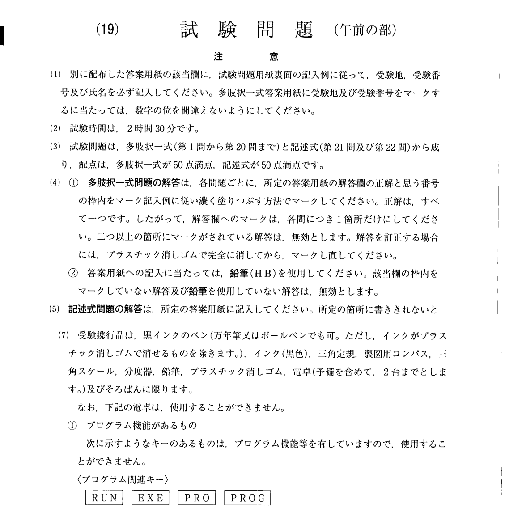
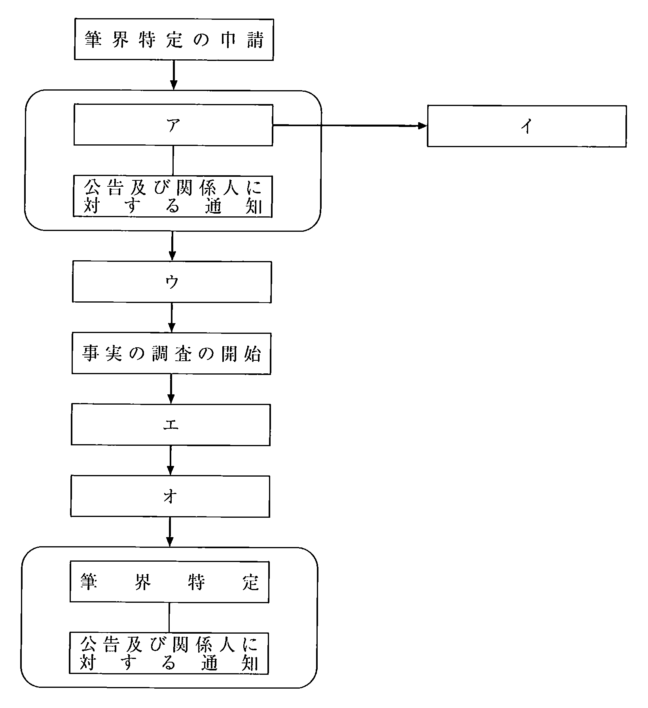
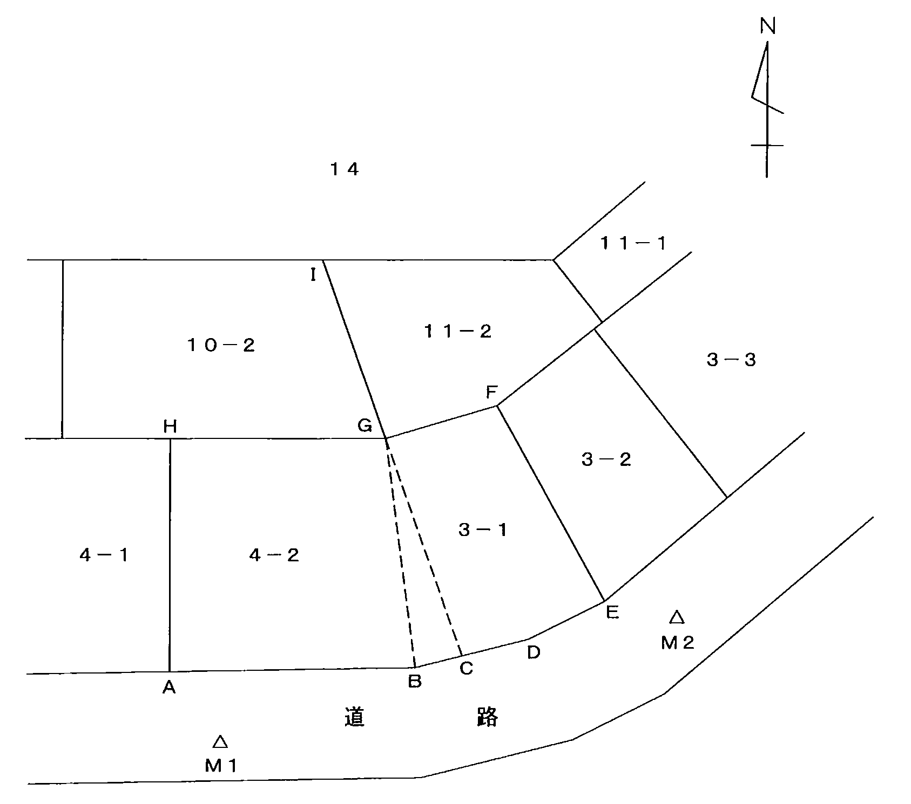
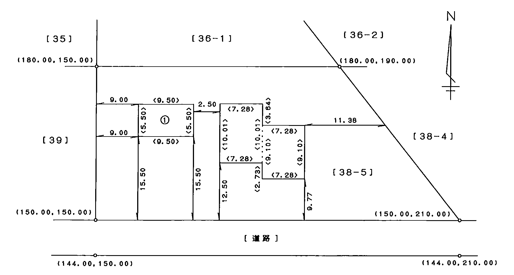
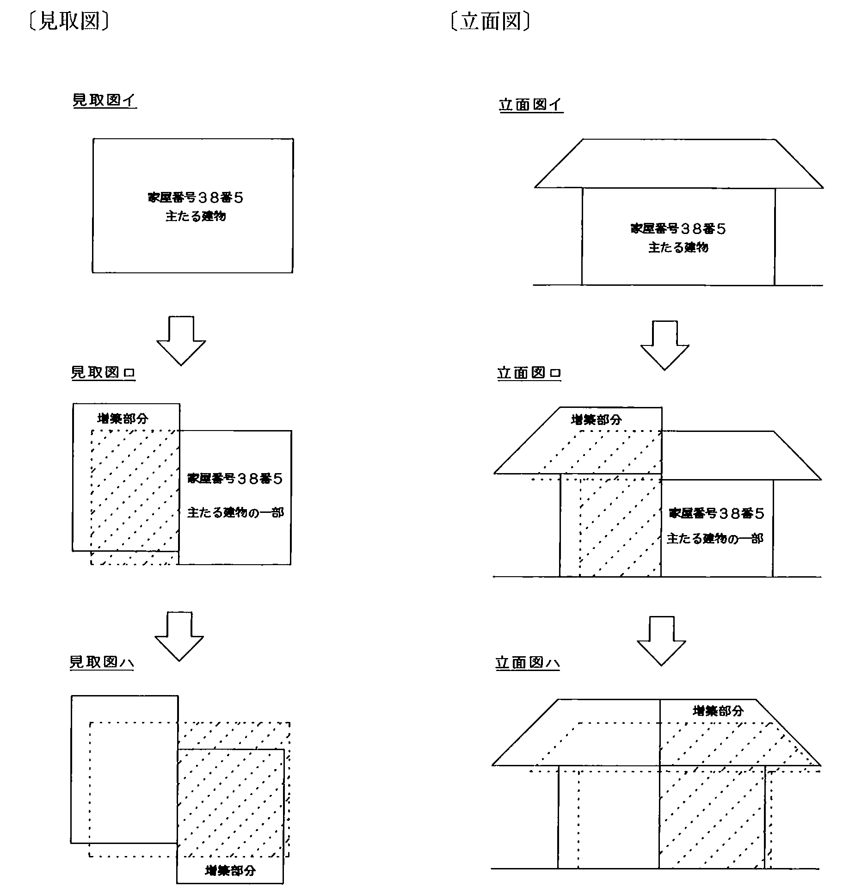
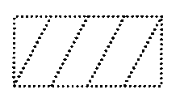
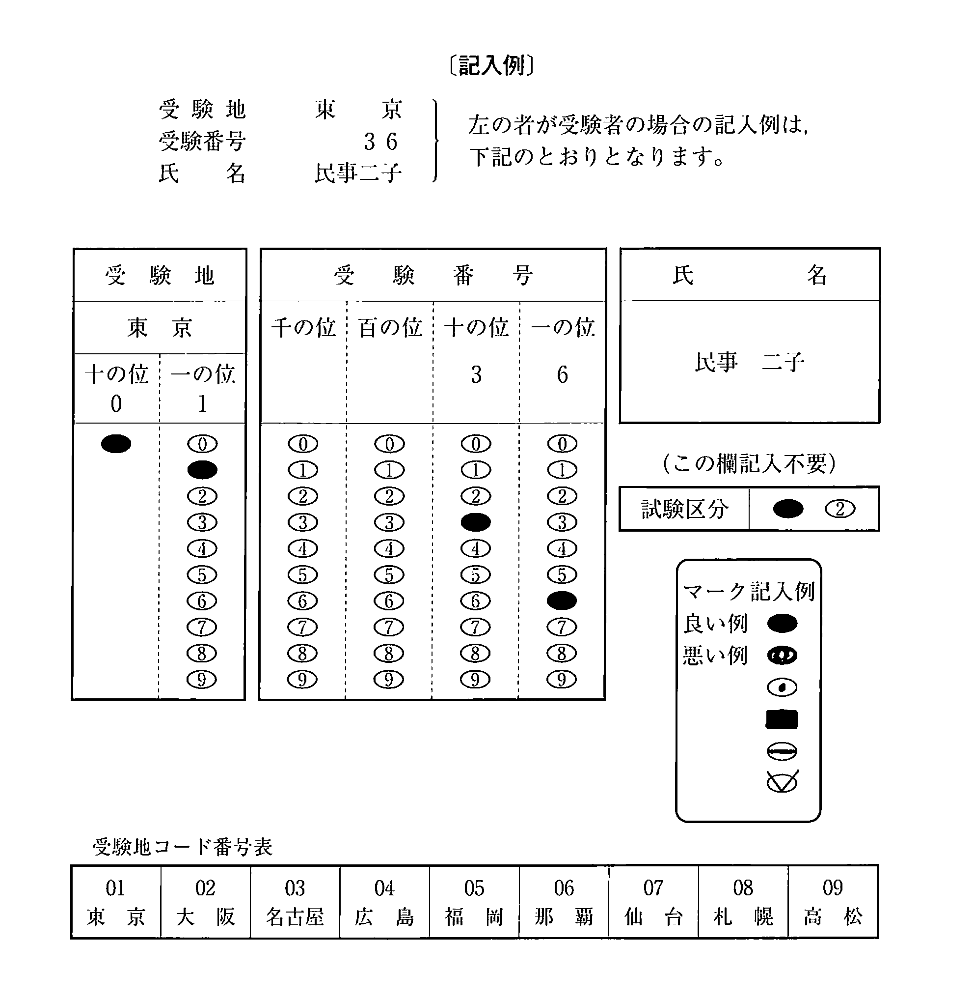

注意（問題冊子の表紙）

多肢択一式（第1問〜第20問）
第1問
次の対話は，法律行為の条件に関する教授と学生との対話である。教授の質問に対する次のアからオまでの学生の解答のうち，判例の趣旨に照らし正しいものの組合せは，後記1から5までのうちどれか。
教授： 今日は，法律行為の条件について聞きたいと思います。Aが，Bとの間で，Bが来年の7月に開催される大会に優勝した場合には，Bに対し，来年の4月分からさかのぼって奨学金を給付するとの合意をしたとしましょう。その後，Bが実際に優勝した場合には，Bは4月分から奨学金を請求することができますか。学生：ア これは，条件の成就により奨学金の給付という契約の効力を発生させるものですので，停止条件に該当しますが，停止条件の付された法律行為は停止条件が成就した時からその効力を生ずるものですので，Bは4月分から奨学金を請求することはできません。教授： 当事者が停止条件を付して契約を締結したが，実際には，停止条件とした事実が既に発生していたとします。この契約の効力はどうなりますか。学生：イ そのような場合には，その条件は付されなかったのと同様に扱われ，有効であることになります。教授： ある土地の所有者Cが，隣接地の所有者Dの知らないうちに両土地間の境界標をCに有利に移設してくれれば，Eに対して50万円を贈与する旨の契約をEとの間で締結したとします。この契約の効力はどうなりますか。学生：ウ 契約に付された条件は不法なものですから，その条件は付されなかったのと同様に扱われ，有効であることになります。教授： ある動産の所有者Fが，5年後にGに対してその動産を贈与するが，Fの気が変わった場合にはいつでも契約は効力を失うとの条件を付して書面により贈与契約を締結したとします。この契約の効力はどうなりますか。学生：エ これは，Fの意思のみに係る条件を付したものですので，契約自体が無効となります。教授： Hが，Iとの間で，契約日から7日以内に動産の修理を完了した場合には，Iに対して所定の修理代金に加えて割増しで修理代金を支払うとの内容の契約を締結したとします。この場合において，HがIの修理道具をわざと損壊し，そのため，5日以内に修理作業を完了することが可能であったのに，修理作業の完了が10日後に遅延してしまったときには，どうなりますか。学生：オ この場合には，Hは故意に条件の成就を妨害しています。したがって，Iは，条件が成就したものとみなしてHに対して割増分の修理代金の支払をも請求することができます。
1 アイ2 アウ3 イオ4 ウエ5 エオ
第2問
次のアからオまでの事例のうち，判例の趣旨に照らしAがCに対して（Dが登場する事例ではDに対して）不動産又は動産の所有権を主張することができるものの組合せは，後記1から5までのうちどれか。
- アAは，Bにだまされて自己所有の不動産をBに売ったが，Bの詐欺に気付き，Bに対して売買契約を取り消すとの意思表示をした。しかし，取消しまでの間に，Bが善意のCに当該不動産を売ってしまっていた。※
- イAは，Bに強迫されて自己所有の不動産をBに売ったが，強迫状態を脱し，Bに対して売買契約を取り消すとの意思表示をした。しかし，取消しまでの間に，Bが善意のCに当該不動産を売ってしまっていた。
- ウAは，自己所有の不動産の登記がBの名義になっていることを知りながら，この状態を事実上容認し，長期間放置していた。Bは当該不動産の登記がBの名義になっていることを利用して，善意のCに当該不動産を売ってしまった。
- エAは，B所有の不動産をBから購入したがいまだ所有権の移転の登記を経由していなかった。Cは，この事情を十分に知りつつ専らAを害する目的で，当該不動産をBから購入して所有権の移転の登記を完了し，さらに，善意のDに当該不動産を転売し，Dへの所有権の移転の登記をした。
- オAは，B所有の動産をBから買ったが，後日持ち帰ることにして，当該動産をBに保管してもらっていた。しかし，Bは，善意のCにも当該動産を売ってしまい，Cの依頼を受けてCのために当該動産を保管していた。
1 アウ2 アエ3 イエ4 イオ5 ウオ
※ ア 平成29年の民法改正（令和2年4月1日施行）により，詐欺による意思表示の取消しは「善意でかつ過失がない第三者」に対抗することができないとされた（民法96条3項）。出題時は善意の第三者に対抗できないとされていた。
第3問
占有訴権に関する次のアからオまでの記述のうち，判例の趣旨に照らし正しいものの組合せは，後記1から5までのうちどれか。
- アAが占有する土地に隣接地の樹木が倒れてくるおそれがある場合には，Aは，隣接地の所有者であるBに対し，占有保全の訴えにより，樹木が倒れないようにするための予防措置を講ずるとともに損害賠償の担保を供与することを請求することができる。
- イAがBに無断でBの所有する土地上に建物を建築して占有している場合において，Bが当該建物を解体するために重機を当該土地に持ち込もうとしているときは，Aは，Bに対し，占有保全の訴えにより，建物の解体の予防を請求することができる。
- ウ建物の賃貸借契約が終了したにもかかわらず，賃借人Aが建物の占有を継続する場合には，賃貸人Bは，Aに対し，占有回収の訴えにより，建物の返還を請求することができる。
- エAが占有する建物の占有をBが奪い，その後，これをCに貸与した場合であっても，Aは，なおBに対し，占有回収の訴えにより，建物の返還を請求することができる。
- オAが自宅の庭先に置いていた自転車をBが盗んで乗り回し，その後，これをCに売り渡した場合には，Aは，Cが占有を始めた時から1年以内であれば，占有回収の訴えにより，自転車の返還を請求することができる。
1 アウ2 アエ3 イエ4 イオ5 ウオ
第4問
建物の床面積又はその登記に関する次のアからオまでの記述のうち，正しいものの組合せは，後記1から5までのうちどれか。
- ア建物に附属する屋外の階段は，屋根のある部分についても建物の床面積に算入しない。
- イ5階建ての建物の5階を取り壊した場合において，その取り壊した床面積と全く同じ床面積の分だけ1階を増築したときは，床面積の変更に係る建物の表題部の変更の登記を申請することを要しない。
- ウ一室の一部に天井の高さ1.5メートル未満の部分がある場合には，その部分を除いて床面積を算出する。
- エ共用部分である旨の登記がある建物について，その床面積が誤って登記されていても，所有者には，建物の表題部の更正の登記を申請する義務はない。
- オ区分建物の要件を備えた2個の部屋から構成されている既登記の普通建物を甲・乙2個の区分建物に区分する登記を申請する場合には，区分後の甲・乙両建物のそれぞれの床面積としては，既登記の当該普通建物の登記された床面積を甲・乙それぞれの専有部分の面積で案分したものを申請書に記載すればよい。
1 アイ2 アエ3 イウ4 ウオ5 エオ
第5問
区分建物の表示に関する登記についての次のアからオまでの記述のうち，誤っているものの組合せは，後記1から5までのうちどれか。
- ア団地共用部分である旨の登記がある建物について建物の滅失の登記の申請をする場合には，当該建物の所有者を証する情報を登記所に提供しなければならない。
- イ区分建物の表題登記の申請をする場合において，一棟の建物の名称があるときは，当該一棟の建物の名称を定めた規約を設定したことを証する情報を提供しなければならない。
- ウ区分建物である建物を新築した者が当該区分建物の表題登記の申請をしないまま死亡した場合には，その相続人は，相続の開始の日から1月以内に当該区分建物の表題登記を申請しなければならない。
- エ表題登記がある非区分建物に接続して区分建物が新築されて一棟の建物となったことにより当該表題登記がある建物が区分建物になった場合における当該表題登記がある建物についての表題部の変更の登記の申請は，当該新築に係る区分建物についての表題登記の申請と併せてしなければならない。
- オAが所有する相互に接続している2個の区分建物に，それぞれ，Bのための抵当権の設定の登記がされていても，その登記の目的，申請の受付の年月日及び受付番号並びに登記原因及びその日付が同一であれば，Aは，当該2個の区分建物について，建物の合併の登記を申請することができる。
1 アイ2 アエ3 イウ4 ウオ5 エオ
第6問
合体による登記等の申請に関する次のアからオまでの記述のうち，誤っているものの組合せは，後記1から5までのうちどれか。
- ア相接続する甲・乙2個の区分建物の隔壁を除去する工事を行って1個の区分建物とした場合には，甲・乙の各区分建物の滅失の登記と合体後の建物の表題登記とを申請しなければならない。
- イ2個以上の建物が合体して1個の建物となった場合において，合体前の建物がいずれも表題登記のない建物であるときは，当該合体後の建物についての合体時の所有者は，当該合体の日から1月以内に，当該建物の表題登記を申請しなければならない。
- ウ増築により主たる建物とその附属建物とが合体した場合には，建物の床面積の増加による表題部の登記事項に関する変更の登記を申請しなければならない。
- エ抵当権の登記のある建物と抵当権の登記のない建物とについては，建物の合体による登記等を申請することはできない。
- オ2個の建物が合体して1個の建物になった場合において，その双方が表題登記がある建物であるときは，合体前の建物の表題部所有者は，当該合体の日から1月以内に，合体後の建物についての建物の表題登記及び合体前の建物についての建物の表題部の登記の抹消を申請しなければならない。
1 アイ2 アエ3 イオ4 ウエ5 ウオ
第7問
建物の表示に関する登記を申請する場合の添付情報とされている建物図面又は各階平面図に関する次のアからオまでの記述のうち，正しいものの組合せは，後記1から5までのうちどれか。
- ア附属建物の新築による建物の表題部の登記事項に関する変更の登記を申請する場合において，主たる建物に変更がないときは，当該申請書に添付すべき建物図面には，主たる建物を表示することを要しない。
- イ既存の建物全部を取り壊し，その材料を用いて同一の床面積及び構造である建物を再築した場合において，建物の表示に関する登記を申請するときは，申請書に建物図面を添付することを要しない。
- ウ地番を異にする他の土地に既登記の建物をえい行移転した場合において，建物の表示に関する登記を申請するときは，申請書に移転後の建物についての建物図面及び各階平面図を添付しなければならない。
- エ各階平面図は，250分の1の縮尺により作成しなければならないが，建物の状況その他の事情によりその縮尺によることが適当でないときは，これによらないことができる。
- オ建物が地下のみの建物である場合には，建物図面には，地下1階の形状を朱書しなければならない。
1 アイ2 アウ3 イエ4 ウオ5 エオ
第8問
表題部所有者のする表題部の変更の登記に関する次のアからオまでの記述のうち，正しいものの組合せは，後記1から5までのうちどれか。
- ア表題部所有者の氏名又は名称に変更があったときは，その変更があった日から1月以内に，表題部の変更の登記を申請しなければならない。
- イ表題部所有者の持分について変更があったときは，その変更があった日から1月以内に，表題部の変更の登記を申請しなければならない。
- ウ地目又は地積について変更があったときは，その変更があった日から1月以内に，表題部の変更の登記を申請しなければならない。
- エ共用部分である建物の床面積について変更があったときは，その変更があった日から1月以内に，表題部の変更の登記を申請しなければならない。
- オ建物が団地共用部分となったときは，その日から1月以内に，表題部の変更の登記を申請しなければならない。
1 アウ2 アオ3 イエ4 イオ5 ウエ
第9問
次の対話は，筆界特定制度に関する教授と学生との間の対話である。教授の質問に対する次のアからオまでの学生の解答のうち，正しいものの組合せは，後記1から5までのうちどれか。
教授： 筆界特定制度とは，どのような制度ですか。学生：ア 土地の所有権登記名義人等の申請に基づき，筆界特定登記官が当該土地及びこれに隣接する他の土地について，筆界の現地における位置等を特定する制度です。教授： 表題部所有者の相続人や所有権の仮登記名義人は，申請をすることができますか。学生：イ いずれも申請することができます。教授： 筆界特定の申請は，そのほか，どのような者がすることができますか。学生：ウ 所有権登記名義人から土地の全部を譲り受けた者も，代位原因を証する情報を提供して代位申請をすることができます。教授： 筆界特定の対象となる筆界について，既に筆界特定登記官による筆界特定がされている場合には，新たに当該土地の所有権の登記名義人となった者は，当該筆界について改めて筆界特定の申請をすることができますか。学生：エ 新たな所有権の登記名義人は，筆界特定の申請をすることができます。教授： 筆界特定の結果について不服がある場合には，申請人は，審査請求をすることができますか。学生：オ いいえ。筆界特定は，筆界特定登記官が，筆界についての認識判断を示すもので，行政処分には当たりませんので，審査請求をすることはできません。ただ，不服がある場合には，民事訴訟の手続により筆界の確定を求める訴えを提起することができます。
1 アイ2 アオ3 イエ4 ウエ5 ウオ
第10問
土地の合筆に関する次のアからオまでの記述のうち，正しいものの組合せは，後記1から5までのうちどれか。ただし，各記述中の条件の他に合併を妨げる要件はないものとする。
- ア甲地及び乙地について丙地を承役地とする地役権の登記がある場合において，登記の目的，申請の受付の年月日及び受付番号並びに登記原因及びその日付が同一であるときは，甲地及び乙地について合筆の登記を申請することができる。
- イ甲地及び乙地に鉱害賠償登録に関する登記がある場合において，その登録番号が同一であるときは，甲地及び乙地について合筆の登記を申請することができる。
- ウ甲地及び乙地について抵当権の仮登記がある場合において，登記の目的，申請の受付の年月日及び受付番号並びに登記原因及びその日付が同一であるときは，甲地及び乙地について合筆の登記を申請することができる。
- エ甲地の所有権の登記名義人はAであり，乙地の所有権の登記名義人はAの父Bである場合において，乙地をAが相続したときは，Aは，所有権の移転の登記を経ることなく，甲地及び乙地について合筆の登記を申請することができる。
- オ甲地と乙地にそれぞれ異なる抵当権が設定されている場合において，各々の抵当権者が作成した抵当権の消滅承諾書を添付したときは，甲地及び乙地について合筆の登記を申請することができる。
1 アイ2 アオ3 イウ4 ウエ5 エオ
第11問
登記所の管轄に関する次のアからオまでの記述のうち，正しいものの組合せは，後記1から5までのうちどれか。
- ア公有水面の埋立てによる土地の表題登記の申請は，当該土地の編入される行政区画が確定するまでは，いずれの登記所にも申請することはできない。
- イ登記事項証明書の交付の請求は，請求に係る不動産の所在地を管轄する登記所にしなければならない。
- ウ市町村合併により，不動産の所在地が甲登記所の管轄から乙登記所の管轄に転属したときであっても，当該不動産の登記記録が甲登記所から乙登記所に移送されるまでの間であれば，当該不動産に係る登記は甲登記所に申請することができる。
- エ甲登記所の管轄区域にある土地が，乙登記所の管轄区域にある区分建物の敷地とされ，敷地権である旨の登記を受けたときであっても，当該土地に係る登記は，甲登記所に申請しなければならない。
- オ甲登記所において登記されている建物について，増築がされた結果，当該建物が乙登記所の管轄区域にまたがることとなった場合には，建物の表題部の変更の登記は，あらかじめ管轄登記所の指定を求める申請をした上で，指定された登記所に対して申請しなければならない。
1 アイ2 アエ3 イウ4 ウオ5 エオ
第12問
分筆の登記に関する次のアからオまでの記述のうち，誤っているものの組合せは，後記1から5までのうちどれか。
- ア敷地権付き区分建物の目的となっている土地について分筆の登記の申請をする場合において，当該区分建物において管理組合の理事長を管理者として定めているときは，その理事長が単独で分筆の登記を申請することができる。
- イ不在者の財産管理人は，家庭裁判所の許可を得なくとも，不在者の土地について分筆の登記を申請することができる。
- ウ相続登記がされた土地について，当該土地を分筆した上で分筆後の土地を各相続人が単独で所有する旨の遺産分割の調停が成立した場合において，当該土地の分筆の登記の申請に他の相続人の協力が得られないときは，代位により単独で分筆の登記を申請することができる。
- エ甲地の全部に乙地を要役地とする地役権の設定の登記がされ，その後に，乙地について所有権の移転の仮登記がされた場合において，甲地から丙地を分筆し，丙地について地役権を消滅させる旨の分筆の登記の申請をするときは，その地役権者が丙地について地役権を消滅させることを承諾したことを証する情報のほか，仮登記名義人が同様に承諾したことを証する情報を併せて提供しなければならない。
- オ甲地について，未成年者A並びにAの父B及び母Cの共有に属する旨の登記がある場合には，B及びCのみが申請人として甲地の分筆の登記を申請することができる。※
1 アウ2 アオ3 イウ4 イエ5 エオ
※ オ 令和3年法律第24号（令和5年4月1日施行）で共有物の管理は持分の価格の過半数で決することとされ，令5.3.28民二533号が分筆・合筆の登記はこれに当たると明示した。出題当時は共有者全員の申請を要すると解されていた。
第13問
地目に関する変更の登記に関する次のアからオまでの記述のうち，誤っているものの組合せは，後記1から5までのうちどれか。
- ア地目が宅地として登記されている土地であって，区分所有建物の規約によって建物の敷地とされた土地（規約敷地）が駐車場として使用された場合には，地目を雑種地とする地目に関する変更の登記を申請しなければならない。
- イ地目が畑として登記されている土地につき，駐車場に転用することについての農地法の規定による許可を得て駐車場として利用していたが，その後，その土地上に工場を新築した場合には，地目を雑種地に変更することなく，直ちに，地目を宅地とする地目に関する変更の登記を申請することができる。
- ウ地目が雑種地として登記されている土地であって，遊園地の敷地として利用されている土地の一部に売店を新築した場合において，その売店部分の敷地がフェンス等により他の敷地と判然区分することができる状況にあるときは，その部分について，分筆をして地目を宅地とする地目に関する変更の登記を申請することができる。
- エ学校の用地内の一画を野外実習を目的とする畑とした場合には，その部分について，分筆をして，地目を畑とする地目に関する変更の登記を申請しなければならない。
- オ牧場地域内に新築した農具小屋が永久的設備と認められる場合には，農具小屋の敷地について，分筆をして，地目を宅地とする地目に関する変更の登記を申請しなければならない。
1 アイ2 アエ3 イウ4 ウオ5 エオ
第14問
次の図は，筆界特定制度の手続の流れ図である。それぞれの枠に後記の1から5までの用語から適当なものを選んで当てはめた場合に，ウの枠に当てはめる用語として最も適当な用語は，後記1から5までのうちどれか。
- 1意見聴取等の期日
- 2筆界調査委員の指定
- 3却下
- 4筆界調査委員の意見提出
- 5筆界特定登記官による審査

第15問
次の表の登記欄に掲げる登記の申請を書面によってする場合において，対象書面欄に掲げる書面について，押印者欄に掲げる者が押印をする必要があるものは，次のアからオまでのうち幾つあるか。
| 登記欄 | 対象書面欄 | 押印者欄 |
|---|
| ア | 建物の表題登記 | 申請人が記名した委任状 | 申請人 |
| イ | 建物の合併の登記 | 委任による代理人が署名した申請書 | 委任による代理人 |
| ウ | 建物の合体の登記 | 申請書に添付する建物図面であって，申請人が記名したもの | 申請人 |
| エ | 土地の合筆の登記 | 申請人が署名した委任状であって，公証人の認証を受けたもの | 申請人 |
| オ | 土地の分筆の登記 | 申請書に添付する地積測量図であって，その作成者が署名したもの | 地積測量図の作成者 |
1 1個2 2個3 3個4 4個5 5個
第16問
次のアからオまでの表示に関する登記のうち，一の申請情報によってその申請をすることができるものは，幾つあるか。
- ア甲土地の一部を分筆した上でこれを乙土地に合筆する場合における分筆の登記及び合筆の登記
- イ甲建物を区分した上でその一部を乙建物の附属建物とする場合における建物の区分の登記及び建物の合併の登記
- ウ附属建物の登記がされている甲建物の主たる建物の種類を変更し，同時に，その附属建物を分割して乙建物とする場合における建物の表題部の登記事項に関する変更の登記及び建物の分割の登記
- エ甲建物を取り壊してその跡地に乙建物を新築した場合における建物の滅失の登記及び建物の表題登記
- オ同一の登記所の管轄区域内にある甲土地と乙建物の表題部所有者の氏名に変更があった場合における甲土地及び乙建物の表題部所有者の氏名についての変更の登記
1 1個2 2個3 3個4 4個5 5個
第17問
登記識別情報の提供を必要とする登記の申請をする場合において，登記識別情報の提供をすることができないときの手続に関する次のアからオまでの記述のうち，正しいものの組合せは，後記1から5までのうちどれか。
- ア登記識別情報の提供をすることができない場合には，申請情報にその理由を記載しなければならない。
- イ資格者代理人によって申請がされた場合であって，資格者代理人が本人確認情報を提供し，かつ，その内容が相当であるときは，登記官は，登記義務者に対して事前通知をする必要はない。
- ウ資格者代理人は，申請人の氏名を知らず，又は申請人と面識がないときは，登記官に対し，本人確認情報の提供をすることができない。
- エ登記識別情報が通知されなかった場合及び登記識別情報の失効の申出に基づいて登記識別情報が失効した場合に限り，登記識別情報を提供することができないことにつき正当な理由がある場合に該当するとして登記識別情報の提供をすることなく登記の申請をすることができる。
- オ登記義務者が海外にあるなど正当な理由がある場合には，事前通知を資格者代理人に対して行うようにする旨の申立てをすることができる。
1 アイ2 アウ3 イオ4 ウエ5 エオ
第18問
建物の滅失の登記の申請に関する次のアからオまでの記述のうち，正しいものの組合せは，後記1から5までのうちどれか。
- ア被相続人が所有権の登記名義人である建物について，被相続人の死亡後，所有権の移転の登記をする前に相続人の一人が当該建物を取り壊した場合には，他の相続人が建物の滅失の登記の申請をすることができる。
- イ抵当権が設定されている建物の滅失の登記を申請するに際しては，その抵当権者の承諾を証する当該抵当権者が作成した情報を添付することを要しない。
- ウ建物の滅失の登記を代理人が書面により申請する場合には，申請人は，委任状に押印した印鑑に関する証明書を添付しなければならず，かつ，その証明書は作成後3月以内のものでなければならない。
- エ建物を同一の敷地において解体移転した場合には，その登記記録には変更がないので，建物の滅失の登記を申請する必要はなく，建物図面の変更の申出をすればよい。
- オ一棟の建物がいずれもAが所有する甲・乙2個の敷地権付き区分建物で構成されている場合において，甲建物のみが滅失したときは，Aは，甲建物の滅失の登記とともに，乙建物について，敷地権であった権利が敷地権でない権利となったことによる建物の表題部に関する変更の登記及び乙建物を非区分建物とする建物の表題部に関する変更の登記を申請しなければならない。
1 アイ2 アオ3 イウ4 ウエ5 エオ
第19問
次のアからコまでのうち，登記をすることができる建物として取り扱うことができないものは幾つあるか。
- ア給水タンク
- イガード下を利用して築造した倉庫
- ウ地下停車場
- エ停車場の乗降場のうち，上屋を有する部分
- オ機械上に建設した建造物であって，地上に基脚を有するもの
- カ農耕用の温床施設であって，半永久的な建造物であるもの
- キ野球場の観覧席のうち，屋根を有する部分
- ク容易に運搬することができる入場券売場
- ケ浮船を利用したものであって，固定しているもの
- コアーケード付街路であって，公衆用道路上に屋根覆いを施した部分
1 1個2 2個3 3個4 4個5 5個
第20問
土地家屋調査士（以下「調査士」という。）又は土地家屋調査士法人（以下「調査士法人」という。）に関する次の記述のうち，誤っているものはどれか。
- 1調査士は，不動産の表示に関する登記の申請手続の代理業務又はこれに関する審査請求の手続についての代理業務について，正当な事由がある場合でなければ依頼を拒んではならない。
- 2調査士は，公務員として職務上取り扱った事件及び仲裁手続により仲裁人として取り扱った事件について，その業務を行ってはならない。
- 3調査士法人は，補助者を置いたときは，遅滞なく，その旨を事務所の所在地を管轄する法務局又は地方法務局の長に届け出なければならない。
- 4調査士は，筆界特定の手続についての代理業務についての事件の依頼を承諾しないときは，速やかに，その旨を依頼者に通知しなければならない。
- 5調査士法人は，その事務所に，当該事務所の所在地を管轄する法務局又は地方法務局の管轄区域内に設立された調査士会の会員である社員を常駐させなければならない。
第21問（土地）
第21問M市B町一丁目2番4号に事務所を有する土地家屋調査士北野二郎が，下記見取図に示すM市C町二丁目3番1の土地（以下「甲地」という。）及びM市C町二丁目4番2の土地（以下「乙地」という。）のそれぞれの所有権の登記名義人等の全員から，物理的現況及び現状の権利関係を登記に正しく反映させるために必要となる表示に関する登記をするよう依頼されたものとして，後記の調査結果に基づき，別紙第21問答案用紙を用いて，後記の問に答えなさい。
〔見取図〕

(注)見取図中，A点からI点までの各点は，筆界点を示し，数字は地番を，実線は筆界線を示す。M1及びM2はM市基準点を示す。
C点はB点とD点を結ぶ直線とI点とG点を通る直線の交点である。
〔土地家屋調査士北野二郎による調査の結果〕
1資料調査の結果
(1)登記所における調査の結果，甲地及び乙地の登記記録に記録されている事項は下記のとおりであった。
（下記以外に，現に効力を有する登記はない。）
甲地（3番1）
（表題部）
M市C町二丁目 3番1 宅地 112.00 ㎡
昭和58年6月14日 3番1，3番2に分筆
（権利部）
甲区
2番 所有権移転
M市C町二丁目5番12号 東川夏男
乙区
1番に抵当権設定の登記がある。
乙地（4番2）
（表題部）
M市C町二丁目 4番2 雑種地 172 ㎡
昭和34年2月7日 4番から分筆
（権利部）
甲区
3番 所有権移転
M市B町三丁目8番6号 西山太郎
(2)南側道路（無地番地）は，M市が所有者である。
(3)甲地については，3番2の土地の分筆時の地積測量図が登記所に備え付けられていたが，甲地の部分についてはいわゆる残地扱いとなっていて，分割線以外の境界の辺長の記載はなく，求積は差し引き計算されたものであった。
(4)10番2及び11番2の土地は，昨年，地積更正の登記がされていて，その際の地積測量図が登記所に備え付けられていた。
〔地積測量図の記載内容の抜粋〕
| F点に相当する筆界点の座標値 | X＝218.55 m Y＝215.11 m |
|---|
| G点に相当する筆界点の座標値 | X＝216.88 m Y＝208.43 m |
|---|
| I点に相当する筆界点の座標値 | X＝226.66 m Y＝205.57 m |
|---|
（成果はM市基準点によるものである旨の記載があった。）
(5)乙地の所有権の登記名義人である西山太郎は昨年死亡し，その相続人は，配偶者の西山花子（住所：M市B町三丁目8番6号）及び子の西山岩雄（住所：M市D町一丁目3番1号）であるが，現時点で遺産の分割協議は調っていない。
2土地の利用状況，筆界点の状況並びに立会い及び測量の結果
(1)土地の利用状況
甲地は，昭和58年8月，売買により東川夏男が取得した。東川夏男は，売買契約を締結する際，前所有者と西山太郎との間で交わされた甲地と乙地の境界確認書を受領するとともに，西山太郎と現地で立ち会い，境界確認書記載のとおりB点とG点を結ぶ直線が境界であることを確認した。その後，B点とG点を結ぶ直線までの範囲を敷地とする居宅を建築し，これを利用して現在に至っている。
乙地は，昭和34年4月，売買により西山太郎が取得した。西山太郎は，以後，乙地を駐車場として利用している。
(2)筆界点の状況
現地のA点，E点，G点及びH点にはコンクリート杭が，B点，D点及びF点には金属標が埋設されている。
(3)立会い等
ア本件依頼人双方の申述要旨
双方が所有する土地の境界については，以前に取り交わされた境界確認書のとおりであることに異議はない。
昨年，北側隣接地10番2及び11番2の境界確認の立会いを求められ，それぞれF点，G点及びH点について筆界点であることを確認した。その際に示された関係資料等から，10番2と11番2の筆界であるI点とG点を結ぶ直線の延長線が甲地と乙地の筆界線であることが判明した。
イ南側道路境界については，M市が立会いの上，A点，B点，D点，E点を順次結ぶ直線であることをM市が確認している。
ウまた，土地家屋調査士北野二郎は，本件土地に隣接するすべての土地の所有
者に立会いを求め，前記見取図中の各筆界点に争いがない旨の確認をした。
エC点にはコンクリート杭を設置した。
(4)測量の結果
実測により得られたデータは，次のとおりである。
ア基本三角点等（既知点）
M市基準点
| 点名 M1 | 標識の種類 金属標 |
|---|
| X座標 200.00 m Y座標 200.00 m |
|---|
| 点名 M2 | 標識の種類 金属標 |
|---|
| X座標 206.10 m Y座標 224.47 m |
|---|
※各点の設置状況は良好である。
イ多角測量観測結果（抜粋）
| 器械点 | 後視点 | 測 点 | 観 測 角 | 距 離 |
|---|
| M1 | M2 | B | 351°00′00″ | 11.21 m |
| M2 | M1 | D | 11°00′00″ | 8.03 m |
| M2 | M1 | E | 35°00′00″ | 3.94 m |
| A点の座標値 | X座標 204.15 m Y座標 196.55 m |
|---|
| H点の座標値 | X座標 216.88 m Y座標 196.55 m |
|---|
ウ11番2の地積測量図の成果は今回の測量の成果と一致している。
また，本件依頼人の申述のとおり，甲地と乙地の筆界はG点とC点を結ぶ直線であることを確認した。
(注)1測量は，M市基準点に基づくものである。
2観測角は，後視方向を0°として右回りの角度を示す。
問1調査及び測量の成果により，B点，C点及びD点の座標値を求め，答案用紙第1欄に記載しなさい。
問2甲地の実測面積を座標法により計算し，答案用紙第2欄に記載しなさい。ただし，計算値の端数処理は，登記の申請書に記載する場合の表示方法によるものとする。
問3甲地について申請すべき登記の目的，添付情報のすべて及び申請人に関する申請情報を答案用紙第3欄に記載しなさい。
問4乙地について申請すべき登記の目的，添付情報のすべて及び申請人に関する申請情報を答案用紙第4欄に記載しなさい。
問5問3及び問4の申請をすることになる理由を簡潔にまとめ，答案用紙第5欄に記載しなさい。
問6問3の登記申請書に添付する地積測量図を作成しなさい。
(注)1座標値は計算結果の小数点以下第3位を四捨五入し，小数点以下第2位までとすること。
2訂正，加入又は削除をしたときは，押印や字数を記載することを要しない。
3地積測量図には，座標値から求めた境界の辺長を，計算結果の小数点以下第3位を四捨五入し，記載すること。基本三角点等の表示は，図中にその地点を明示し符号を付した上，用紙の適宜の箇所にその符号，基本三角点等の名称及び座標値を記載すること。ただし，測地系の表示，各筆界点の座標値の表示，求積及びその方法並びに地積の表示の記載は，省略して差し支えない。
4本件土地の公差は，以下のとおりである（ただし，本件土地は市街地地域に属する。）。
（単位：㎡）
| 精度区分（㎡） | 甲1 | 甲2 | 甲3 | 乙1 | 乙2 | 乙3 |
|---|
| 112 | 0.37 | 0.87 | 1.75 | 2.44 | 5.06 | 10.11 |
| 172 | 0.47 | 1.13 | 2.26 | 3.21 | 6.60 | 13.21 |
5本件土地を管轄する登記所は，不動産登記法附則第6条第1項の指定がされている登記所（いわゆるオンライン庁）であり，必要な登記の申請は，書面を提出する方法によってするものとする。
第22問（建物）
第22問A市B町38番地5に住所を有する東澤太郎は，後記の登記記録に記録されている事項のとおり，甲建物は亡父東澤佐吉が所有していたところ，その死亡後に，見取図・立面図のとおり，主たる建物の左側約半分を取り壊して増築したが，相続に関する協議が調わなかったため，登記手続をせずに住居として利用していた。既存の建物部分の老朽化に伴い，このたび残りの右側約半分を取り壊して増築し，かつ，相続に関する協議も調ったため，これらの変更に伴い必要となる表示に関する登記の申請を，A市C町37番地1に事務所を有する土地家屋調査士山上省吾（連絡先 ＊＊＊－＊＊＊－＊＊＊＊）に依頼したものとして，後記の調査結果に基づき，別紙第22問答案用紙を用いて，後記の問に答えなさい。ただし，所有権に関する登記については，これらの表示に関する登記がすべて完了してから手続をするものとする。
〔配置図〕


(注)1建物の測定値は，柱の中心からのものである。
2柱を含めた壁厚は，すべて18 cmであり，柱の中心と壁の中心は一致している。
3敷地境界から建物までの距離は，すべて壁の外面までの距離であり，建物と建物との距離は，それぞれの壁の外面までの距離である。
4距離の単位は，メートルである。
5［ ］内の数字は土地の地番であり，（ ）内の数字は筆界点の座標である。
6〈 〉内の数字は，建物の測定値である。
7北の方向は，X軸正方向に一致する。
8
の部分は，既存建物を取り壊した部分である。 9建物の天井までの高さは，すべて3 m以上である。
［調査結果］
1．東澤佐吉は，平成14年3月6日に死亡し，平成19年6月1日に遺産分割協議が成立した。この遺産分割協議書によると，甲建物については東澤太郎が相続することとされている。
2．見取図ロ及び立面図ロの増築部分は，平成14年5月7日に既存部分の取壊しに着手し，同年6月11日に増築工事が完了し，引渡しを受けた。増築部分の構造は木造であり，屋根はステンレス鋼板屋根である。
3．見取図ハ及び立面図ハの増築部分は，平成19年6月14日に既存部分を取り壊し始め，同年7月31日に増築工事が完了し，引渡しを受けた。増築部分の構造は木造であり，屋根はステンレス鋼板屋根である。
4．すべての増築部分は，東澤太郎が建築資金を出して工事を依頼したものである。
5．上記2の増築工事の完了後の見取図ロ及び立面図ロに示された建物全体について，居住のための一体としての利用を確認し，また，上記3の増築工事の完了後の見取図ハ及び立面図ハに示された建物全体について，居住のための一体としての利用を確認した。
6．附属建物1については，何ら変更はなかった。
7．登記所で調査した甲建物の現在の登記記録に記録されている事項（登記事項一部省略）は，次のとおりである。
（表題部）
| 所 在 | A市B町字C 38番地5 |
|---|
| 家 屋 番 号 | 38番5 |
|---|
| 主たる建物 | 種 類 居宅 |
|---|
| 構 造 木造かわらぶき平家建 |
|---|
| 床面積 124.21 ㎡ |
|---|
| 附属建物1 | 種 類 車庫 |
|---|
| 構 造 木造亜鉛メッキ鋼板ぶき平家建 |
|---|
| 床面積 52.25 ㎡ |
|---|
（権利部）
| 甲 区 | 1番 A市B町38番地5 東澤佐吉 |
|---|
| 昭和55年12月21日受付第4321号 |
|---|
問1本件申請に必要な申請情報を作成しなさい。
問2本件申請に必要な添付情報のうち，建物図面及び各階平面図を作成しなさい。ただし，附属建物1のみの図面を作成する必要がある場合には，その図面の作成は省略するものとする。
問3本件申請に必要な添付情報につき，申請書の写し及び図面以外の添付情報を該当欄に列記しなさい。また，それぞれの添付情報につき，具体的にどのような書面を添付するのか，その書面の名称を記載して答えなさい。ただし，一つの添付情報につき複数の書面がある場合には，一つのマス内に列記すること。
(注)1建物図面は500分の1，各階平面図は250分の1の縮尺にて作成すること。
2申請情報及び図面については，訂正，加入又は削除したときは，押印や字数を記載することを要しない。
3本件建物を管轄する登記所は，不動産登記法附則第6条第1項の指定がされている登記所（いわゆるオンライン庁）であり，必要な登記申請は，書面を提出する方法によりするものとする。
答案用紙の記入例

多肢択一式の正解
| 第1問 | 3 |
|---|
| 第2問 | 4 |
|---|
| 第3問 | 3 |
|---|
| 第4問 | 2 |
|---|
| 第5問 | 3 |
|---|
| 第6問 | 2 |
|---|
| 第7問 | 5 |
|---|
| 第8問 | 5 |
|---|
| 第9問 | 2 |
|---|
| 第10問 | 3 |
|---|
| 第11問 | 2 |
|---|
| 第12問 | 2 |
|---|
| 第13問 | 5 |
|---|
| 第14問 | 2 |
|---|
| 第15問 | 1 |
|---|
| 第16問 | 4 |
|---|
| 第17問 | 1 |
|---|
| 第18問 | 1 |
|---|
| 第19問 | 3 |
|---|
| 第20問 | 3 |
|---|
法改正の注
- 第2問ア 平成29年の民法改正（令和2年4月1日施行）により，詐欺による意思表示の取消しは「善意でかつ過失がない第三者」に対抗することができないとされた（民法96条3項）。出題時は善意の第三者に対抗できないとされていた。
- 第12問オ 令和3年法律第24号（令和5年4月1日施行）で共有物の管理は持分の価格の過半数で決することとされ，令5.3.28民二533号が分筆・合筆の登記はこれに当たると明示した。出題当時は共有者全員の申請を要すると解されていた。
出典：「土地家屋調査士試験」（法務省）（https://www.moj.go.jp/shikaku_saiyo_index5.html）を加工して作成（元にしたもの：法務省 平成19年度土地家屋調査士試験 午後の部 問題（冊子）。文字起こしして法改正の注を追加。冊子記号は除き、読点などの表記は原文どおり）。加工したのは当サイトであり、法務省が作成・公表したものではありません。